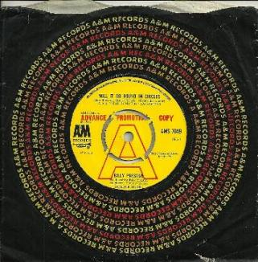
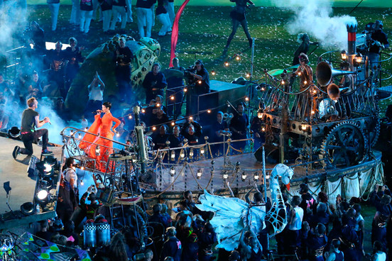
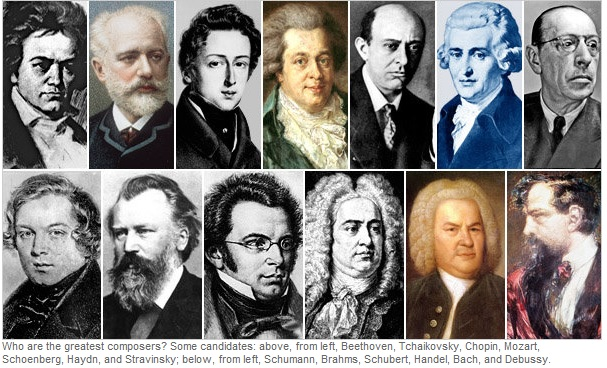
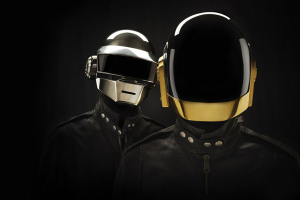

Favorite Music
Anything that refreshens brain and entertains listeners
I listen to various types of music, but normally I stay put with classical, jazz, rock, alternative, and pop genres. It is also nice to hear the top 40 songs on the radio.
The link below streams the American Top 40 Radio hosted by Ryan Seacrest from Los Angeles, CA.
For classical music lovers, this player streams KDFC, the Bay Area’s listener-supported classical radio station.
Music is a celebration. It is the essence of life, contentment, connector to anyone, one of the languages that need not to be interpreted.
One of the best bands that people revere much is the Beatles. Their song collection is very great, often used and covered by musicians in competitions and other occasions. The pop cultures also have many famous players who stay, come, and go. Each decade has produced music which belongs to the generation of its people. For example, boybands and girl groups dominated the music industry about two decades ago.
 
Wonderful classical music is one of the genres which is timeless and proven from time to time to be more beautiful than just memories.

As we have known, the current trend in music industry right now is shifting to the blending of Electronic music and other genres such as pop, rap, alternatives, and other experimental tunes which make people have fun and escape from mundane world.

Back to Top Home